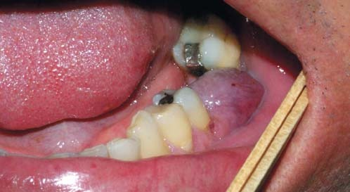
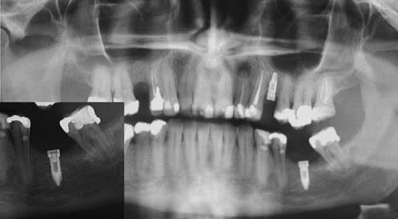
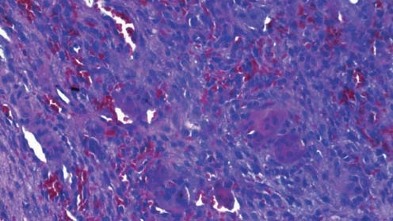
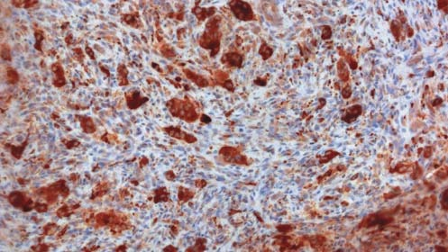

Наука · журнал «ДентАрт» 2016 №4
Периферійна гігантоклітинна гранулема як ускладнення після імплантації
PERIPHERAL GIANT CELL GRANULOMA AS A COMPLICATION AFTER THE IMPLANTATION
Периферійна гігантоклітинна гранулема — це доброякісна пухлина, яка характеризується реактивною гіперплазією тканин на фактор місцевого подразнення і має майже ті самі мікроскопічні характеристики, що і центральна гігантоклітинна гранулема. У більшості випадків причинні фактори так і не визначаються, проте вплив твердих зубних відкладень, неадекватне протезування і переломи коренів є найбільш поширеними причинами. Клінічну диференціальну діагностику реактивного ураження ясен потрібно робити при наявності гнійної гранулеми, травматичної фіброми і периферійної осифікуючої фіброми.
З приводу поширеності реактивних уражень, пов'язаних з установкою дентальних імплантатів, існує дуже мало літературних даних, і донині поки що не доведено, розвивається гранулема через механічне та біологічне подразнення чи через неправильне встановлення імплантата, що призводить в результаті до поганого рівня гігієни порожнини рота. Ускладнення, які можуть виникнути навколо зони імплантації, різноманітні і проявляються у формі дегісценцій, мукозиту, гіперплазії ясен, а також у формуванні біоплівки. Цей клінічний випадок описує виникнення периферійної гігантоклітинної гранулеми, пов'язаної з імплантатом, і супроводжується літературним оглядом подібних випадків, опублікованих в англомовних джерелах.
Клінічний випадок
46-річний чоловік звернувся на кафедру імплантології факультету стоматології Університету Сан-Леопольдо Мандича в місті Кампінас, штат Сан-Паулу, Бразилія, у серпні 2012 року з проханням встановити імплантати з естетичною і функціональною метою. Імплантати Titamax Ex (Neodent, Бразилія) із зовнішнім шестигранником встановили в зоні верхнього лівого премоляра і нижнього лівого першого моляра. Потім на них відразу ж розмістили формувачі ясен.
У червні 2013 року пацієнт звернувся вже з ураженням на місці імплантації, якому відповідала ділянка нижнього лівого першого моляра. При внутрішньоротовому огляді виявлено добре відокремлене, безболісне утворення еластичної консистенції на ніжці фіолетового кольору, діаметром близько 1 см. Рентгенологічно в зоні імплантації не було виявлено жодних ознак, які були б асоційовані із залученням кістки в патологічний процес (фото 2). Клінічна диференціальна діагностика робилася між гнійною гранулемою і периферійною гігантоклітинною гранулемою (фото 1).


Фото 1. Клінічне фото безболісного фіолетового утворення на ніжці, пов'язаного з дентальним імплантатом. Фото 2. На панорамній рентгенограмі видно імплантат, встановлений у зоні лівого нижнього моляра. При збільшенні зображення не видно жодних рентгенологічних ознак, асоційованих з ураженням кістки.
Матеріал ексцизійної біопсії з проблемної ділянки передали на кафедру щелепної патології факультету стоматології Університету Сан-Леопольдо Мандича. Матеріал біопсії фіксували в 10%-му буферному розчині формаліну протягом 24 годин. При макроскопічних дослідженнях виявили два фрагменти м'яких тканин коричневого кольору волокнистої консистенції: більший фрагмент розміром 10x8x4 мм і фрагмент менший розміром 7x6x3 мм. Гістопатологічна експертиза засвідчила, що фрагмент слизової оболонки вистелений паракератинізованим багатошаровим плоским епітелієм. Власна пластинка складалася зі сполучної тканини, яка містить різні гігантські багатоядерні клітини, оточені мезенхімальними клітинами яйцеподібної і веретеноподібної форми з присутніми кількома дрібними кровоносними судинами (фото 3). Гістопатологічне обстеження підтвердило діагноз периферійної гігантоклітинної гранулеми.
У жовтні 2013 року пацієнта направили в стоматологічну клініку стоматологічного факультету Університету Сан-Леопольдо Мандича з рецидивом ураження. Цього разу провели глибшу і ширшу ексцизійну біопсію, кюретаж зони прилеглої кістки з подальшим використанням кісткового матеріалу для відновлення дефекту. Біопсію знову передали на кафедру щелепної патології факультету стоматології Університету Сан-Леопольдо Мандича. У результаті гістопатологічного аналізу знову було поставлено діагноз периферійна гігантоклітинна гранулема. Протягом наступного року провадилося спостереження, але повторних утворень у зоні ясен не виникало.
З матеріалу кожної біопсії були зроблені парафінові блоки для імуногістохімічного забарвлювання з використанням антитіл CD68. П'ять мікрозрізів були очищені від парафіну, промиті і занурені в 3% розчин перекису водню на 30 хвилин (Dinamica, Діадема, Сан-Паулу, Бразилія). Для верифікації антигена зрізи поміщали в парову камеру, наповнену цитратним буферним розчином (рН 6,0) на одну годину при температурі 95°C (Sigma, Сент-Луїс, Мiссурі, США). Потім зрізи витримували з первинним антитілом у розведенні 1:1200 протягом ночі при температурі 4°С (Dako, Карпінтерія, Каліфорнія, США). Після цього досліджуваний матеріал інкубували за стрептавидін-біотиновою технологією (LSAB, Dako, Карпінтерія, Каліфорнія, США) протягом 30 хвилин і фарбували чотирихлористим розчином 3.3'-діамінобензидіну (Dako, Карпінтерія, Каліфорнія, США) протягом 5 хвилин при 37°C з подальшим контрастуванням гематоксиліном (Dinamica, Діадема, Сан-Паулу, Бразилія). Макрофаги були використані для позитивного контролю. Імуногістохімічне забарвлювання з CD68 антитілами виявилося сильнопозитивним для багатоядерних гігантських клітин, що продемонстровано на фото 4. Такий результат свідчить про гістиоцитомакрофагальну або остеоцитарну природу цих клітин.


Обговорення
У порівнянні з періімплантитом інші реактивні ураження, пов'язані з дентальними імплантатами за типом периферійної гігантоклітинної гранулеми, вважаються рідкісними, у літературі таких випадків зареєстровано лише 12.
Hirshberg і колеги описали три випадки гігантоклітинної гранулеми, асоційованої з дентальним імплантатом, у двох чоловіків віком 31 і 69 років і однієї жінки у віці 44 роки. У всіх випадках первинна картина ураження нагадувала періімплантит і у двох випадках локалізувалася в задній ділянці нижньої щелепи, а в одному — спереду верхньої щелепи. Патологію у жінки помітили через 6 років після імплантації, у одного чоловіка — через 14 місяців, а в іншого тимчасових критеріїв встановити не вдалося. У всіх випадках спостерігався рецидив патології. Лікування провадилося шляхом кюретажу, часткової лазерної резекції та хірургічного видалення імплантата.
Bischof спостерігав випадок периферійної гігантоклітинної гранулеми в задній ділянці нижньої щелепи у формі еластичної наростаючої маси через 2 роки після встановлення імплантатів Branemark self-tapping Mk II. Після резекції і кюретажу рецидивів не спостерігалося.
Cloutier повідомив про подібний випадок аналогічної локалізації через 6 років після встановлення титанового імплантата у чоловіка віком 21 рік, тут лікування завершилося хірургічним видаленням імплантата. Olmedo спостерігав випадок гранулеми на верхній щелепі у формі пухлиноподібного утворення навіть через 12 років після встановлення імплантата діаметром 4,1 мм і довжиною 11,5 мм. Після резекції і кюретажу рецидивів у цьому випадку не виникало. Ozden і Penarrocha-Diago описали випадки гігантоклітинної гранулеми у двох пацієнток після встановлення імплантатів Straumann і Defcon через 6 і 2 роки відповідно. В обох випадках патологія нагадувала екзофітну масу, рецидивів якої не виникало після резекції і кюретажу.
Galindo-Moreno спостерігав подібний випадок у 74-річного чоловіка через 6 років з тією ж ефективністю аналогічного підходу до лікування. Hernandez у свою чергу описав три випадки патології після встановлення імплантатів системи Branemark, у двох з яких ураження мало вигляд маси, що кровоточить, через 2 і 3 роки після встановлення імплантатів. Тільки хірургічне видалення імплантатів вирішило проблему рецидивів патології.
У загальній практиці гнійні гранулеми вважаються поширенішими ураженнями, ніж периферійні гігантоклітинні. З іншого боку, якщо врахувати можливий етіологічний взаємозв'язок цих уражень з дентальними імплантатами, то гігантоклітинні ураження в такому випадку зустрічаються частіше, ніж прості піогенні утворення. У процесі аналізу англомовної літератури, доступної для вільного скачування, виявлено 12 випадків периферійних гігантоклітинних гранулем і лише 5 випадків гнійних гранулем, викликаних прямим або непрямим впливом дентальних імплантатів. Hirshberg і колеги на прикладі дослідження 25 біопсій з періімплантатної зони верифікували периферійну гігантоклітинну гранулему у 12% випадків.
Хоча в цьому клінічному випадку ураження і було ідентифіковане у пацієнта чоловічої статі, дані огляду літературних джерел вказують на більшу поширеність патології серед жінок, ніж серед чоловіків (співвідношення 1,6:1). Gunhan і колеги припускають, що подібна схильність жінок до утворення периферійної гігантоклітинної гранулеми пов'язана з впливом статевих гормонів, оскільки багатоядерні гігантські клітини є мішенню для естрогенів. Імуногістохімічне дослідження з метою виявлення рецепторів естрогену в периферійних і центральних гігантоклітинних гранулемах щелеп засвідчило їх наявність у периферійних ураженнях і відсутність у центральних. Проте якщо враховувати зв'язок між виникненням подібної патології і встановленням дентального імплантата, то можна припустити, що вплив естрогену є все ж таки не таким важливим, враховуючи той факт, що більшість пацієнток — жінки в періоді після менопаузи, коли рівень естрогену в сироватці різко знижений.
Згідно з даними огляду літератури, віковий діапазон пацієнтів коливається в межах 31-74 років, а середній вік, за твердженням Katsikeris, становить 50,9 років. Автор описує подібне утворення як найбільш поширене у пацієнтів віком від 40 до 60 років. Motamedi і Shadman, навпаки, стверджують, що середній вік пацієнтів з цією патологією становить 31-33 роки. Важливо підкреслити, що віковий діапазон, як і його середній показник, можуть мати вищі значення у пацієнтів з актуальним аспектом дентальної імплантації.
Згідно з даними літератури, периферійна гігантоклітинна гранулема більш характерна для нижньої щелепи. Ця закономірність підтверджена і в нашому огляді: задня частина нижньої щелепи виявилася найчастішою локалізацією патології, що було виявлено у 8 з 13 випадків (62%). Після встановлення імплантата первинне виявлення утворення могло бути діагностоване як через 3 місяці, так і через 12 років. У даному клінічному випадку ураження вперше було діагностовано через 10 місяців після імплантації.
Спірним залишається питання про видалення зубів як про можливий етіологічний фактор, який ініціює формування периферійної гігантоклітинної гранулеми. Про такий зв'язок свідчать дані Hirshberg і колег, які довели, що периферійна гігантоклітинна гранулема виникає після видалення зубів у 8-11% випадків. При цьому периферійна гігантоклітинна гранулема була зареєстрована в період менш ніж через рік після екстракції. Таким чином, було б цікаво дослідити випадки з анамнезом видалення зубів до імплантації, а також встановити час між операціями екстракції і встановлення імплантата.
Огляд літературних даних засвідчив, що периферійні гігантоклітинні гранулеми, асоційовані з дентальними імплантатами, спочатку проявляються у формі періімплантитів, втрати формувачів ясен, екзофітних мас і сильної кровотечі при чищенні зубів. Cloutier і колеги припускають, що абразивна поверхня імплантата з часом може стати джерелом хронічного подразнення, яке, у свою чергу, в деяких випадках може провокувати такі реактивні ураження.
У розглянутих випадках частота рецидивів патології становила 46,2%, при цьому деякі ураження повторювалися п'ять разів поспіль. Такі показники значно вищі, ніж аналогічні при периферійних гігантоклітинних гранулемах, не асоційованих з дентальними імплантатами, частота рецидивів яких не перевищує 9,9%. Однак важливо підкреслити, що кількість зареєстрованих випадків на сьогодні дуже мала для аргументування будь-яких висновків. 6 випадків рецидиву були зареєстровані серед 13 описаних, у трьох з них гранулеми були видалені лише за допомогою кюретажу, і лише в одному ураження було видалено повністю ще на етапі його діагностики, але також згодом призвело до рецидиву. Із семи випадків, в яких периферійна гігантоклітинна гранулема спочатку була видалена шляхом кюретажу, тільки два повторилися знову. У п'яти з тринадцяти випадків потрібна була операція хірургічного видалення імплантата (38%).
Bischof з колегами описали випадок периферійної гігантоклітинної гранулеми у 56-річної жінки з трьома встановленими імплантатами в задній ділянці нижньої щелепи. Незважаючи на достатність місця, нахил імплантатів був неприйнятним, і це призвело до того, що формувачі ясен двох з них були частково відкручені і заново позиціоновані. Крім того, пацієнтка скаржилася на труднощі при проведенні гігієнічних процедур через виникнення кровотеч. Унаслідок цього зубний наліт продовжував накопичуватися, потенціюючи запальну реакцію тканин. Ці відомості можна порівняти з дослідженнями Ozden і колег, які описали випадок периферійної гігантоклітинної гранулеми, асоційованої з дентальним імплантатом, який виник через погану адаптацію протеза, що також призвело до нагромадження зубного нальоту і подразнення ясен.
У нашому дослідженні був використаний Titamax Ex імплантат із зовнішнім шестигранником (Neodent, Бразилія), який є досить поширеним представником в імплантологічній практиці. Wilson Jr. і колеги за допомогою скануючої електронної мікроскопії (СЕМ) та енергетично-дисперсного рентгенівського спектрометра (EDS) встановили, що рентгеноконтрастні чужорідні тіла, переважно титан і зубний цемент, оточені хронічним запальним інфільтратом, були виявлені в 34 із 36 випадків дослідження матеріалу періімплантатної біопсії. Проте в нашому випадку з використанням лише світлової мікроскопії не було ідентифіковано жодних подібних частинок.
Наявність металевих частинок навколо імплантатів, згідно з даними літератури, викликана самою механікою встановлення імплантата, неприйнятною установкою абатментів і раннім видаленням невдалих імплантатів — адже всі ці фактори можуть викликати реакцію гіперчутливості з подальшим приростом кількості макрофагів. Olmedo з колегами довели наявність вільних або фагоцитованих металоподібних частинок, що містяться в періімплантатних м'яких тканинах. Вони, очевидно, і можуть призвести до агресивного процесу, що довели Rodrigues і співавтори при ретроспективному дослідженні невдалих імплантацій внаслідок періімплантитних уражень. Подальші дослідження гнійних гранулем і периферійних гігантоклітинних гранулем, асоційованих з дентальними імплантатами, підтвердили наявність частинок, імовірно титанових, в зоні початкового ураження і їх відсутність у подібних наступних утвореннях. Як наслідок, це доводить, що периферійні гігантоклітинні гранулеми, пов'язані з дентальними імплантатами, ініціюються фактором травми.
Важливо усунути всі посилюючі фактори — дефектні протези і реставрації, великі чи погано припасовані протези, зубний камінь. Слід враховувати і значення інших факторів, таких як діастеми, які можуть сприяти ретенції часточок їжі, ортодонтичні апарати і дентальні імплантати. Після видалення причинного фактора слід виконати хірургічне висічення ураження з подальшою хірургічною обробкою прилеглої кісткової тканини, яка має першорядне значення у програмі профілактики можливого рецидиву.
Імуногістохімічне дослідження з використанням CD68 антитіл робили для визначення природи багатоядерних гігантських клітин у зоні ураження. У різних літературних джерелах це питання залишається спірним, тому що одні вказують на макрофагальне походження гігантських клітин, а інші — на їх походження з остеокластів. Різні дослідження засвідчили, що в багатоядерних гігантських клітинах периферійної гігантоклітинної гранулеми було виявлено ряд імуногістохімічних маркерів, таких як МВ-1, виментин, α-1-антихімотрипсін і CD68, які підтверджують гістіоцитарно-макрофагальну або остеокластичну природу походження. Galindo-Moreno з колегами нещодавно довели, що немає жодної різниці між імунофенотипом багатоядерних гігантських клітин, присутніх у складі периферійної гігантоклітинної гранулеми і асоційованих з дентальними імплантатами, що не характерно для центральних гігантоклітинних гранулем і періімплантатного остеолізису.
Висновки
Реактивні періімплантатні ураження слід видаляти повністю з метою профілактики рецидивів і невдалої імплантації. Існують розбіжності в думках щодо того, чи слід видаляти сам імплантат під час видалення ураження. Тому дуже важливо у випадках периферійних гігантоклітинних гранулем дійти до логічного консенсусу щодо вибору методу лікування. Не менш важливо вести гістологічні дослідження для вивчення реакцій періімплантатних м'яких тканин, адже тільки так можна поставити точний діагноз і зробити диференціальну діагностику з іншими пухлинними чи непухлиноподібними ураженнями, такими як гнійна гранулема, центральна гігантоклітинна гранулема, коричневі пухлини при гіперпаратиреозі або інші злоякісні новоутворення.